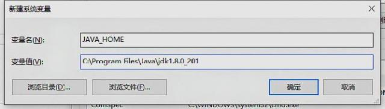
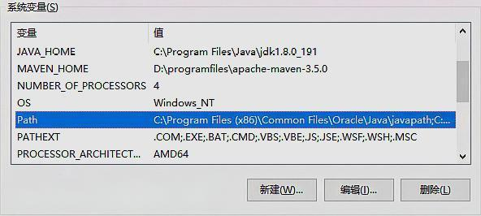

1. Enter the download page through the Oracle official website
2.Choose the version you need - > accept - > choose windows x64 to download. Generally speaking, you can choose x86 version, but from the current computer configuration, both Windows 7 and windows 10 systems are basically 64 bit systems. It is recommended to download 64 bit JDK. In addition, subsequent versions of eclipse (32-bit, 64 bit) can only be used with the same number of jdks, otherwise an error will be reported.
Run the downloaded JDK installation package and click next to install it. You can modify the installation address according to your own needs (not recommended)
1.Right click my computer to select properties, open the control panel - > Click advanced system settings - > environment variables under advanced
2.Under the system variable, the value of the new Java home variable points to the folder where the JDK is installed.
3.Under system variable, create a new variable classpath variable value input: .;%JAVA_HOME%\lib;%JAVA_HOME%\lib\tools.jar;%JAVA_HOME%\lib\dt.jar
4.As shown in the figure below, select path and click Edit
5.New variable: enter% Java_ HOME%\bin;%JAVA_ Home% \ JRE \ bin click the confirm button until you return to the control panel again.
For Windows 7 system, add directly at the end;% Java_ HOME%\bin;%JAVA_ HOME%\jre\bin

1.Win key + R key to open the operation, input CMD, and click OK
2.Enter Java – Version (empty space after Java) enter. If the JDK version information appears, that is, the JDK environment is successfully configured, and Java is not an internal command but a configuration failure.